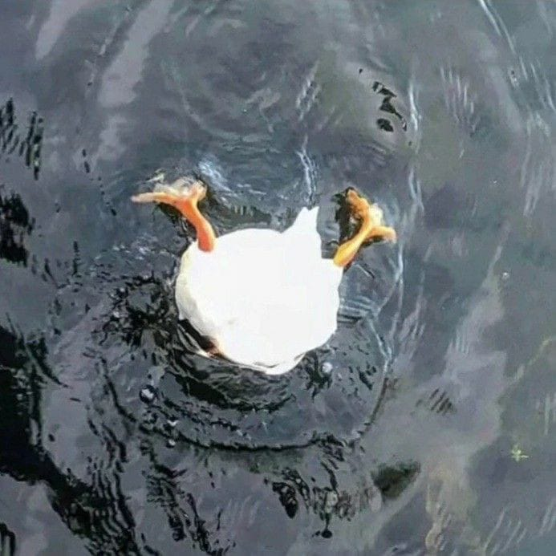
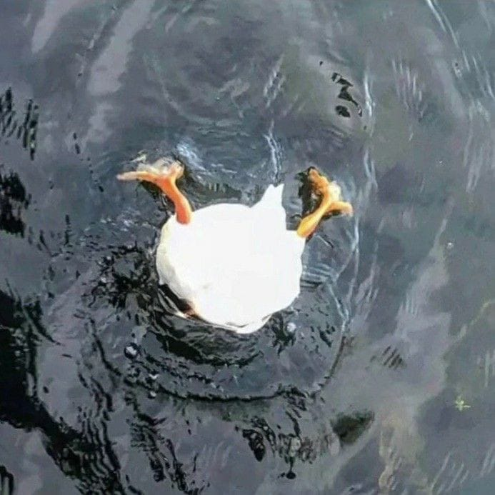
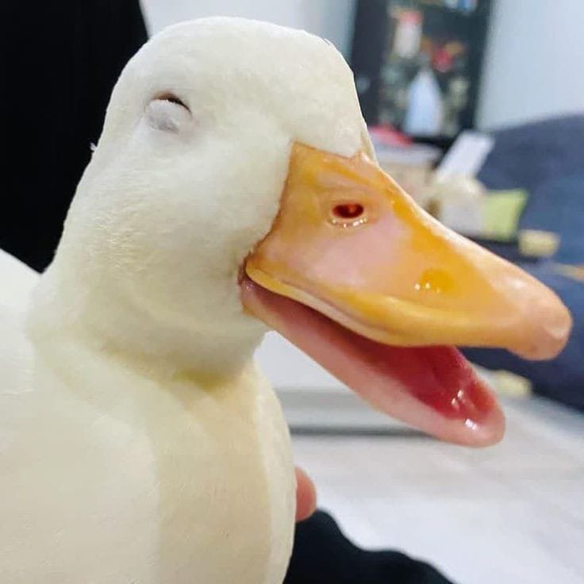
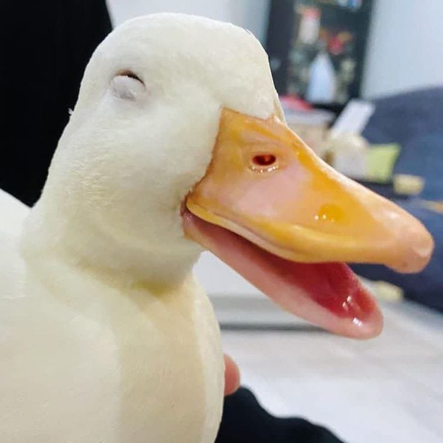

Bebek
Bebek atau itik adalah nama umum untuk beberapa spesies burung dalam famili Anatidae. Bebek umumnya adalah burung akuatik yang sebagian besar berukuran lebih kecil dibandingkan kerabatnya, angsa dan angsa berleher pendek, dan dapat ditemukan pada perairan air tawar maupun air laut. Bebek kadang-kadang disamakan dengan beberapa burung air yang berhubungan jauh namun mirip dalam penampilan, misalnya loon, grebe, gallinule, dan coot. Beberapa jenis bebek juga dapat melakukan kawin silang, tetapi menghasilkan keturunan yang steril dan tidak bisa memiliki keturunan. Seperti persilangan antara Entog dengan bebek pelari dapat menghasilkan keturunan yang steril, brati dan tiktok.
PENAMPILAN
Secara keseluruhan tubuh bebek berlekuk dan lebar, dan memiliki leher yang relatif panjang, meski tidak sepanjang angsa dan angsa
berleher pendek. Bentuk tubuh bebek bervariasi dan umumnya membulat. Paruhnya berbentuk lebar dan mengandung lamellae yang berguna
sebagai penyaring makanan. Pada spesies penangkap ikan, paruhnya berbentuk lebih panjang dan lebih kuat. Kakinya yang bersisik kuat dan
terbentuk dengan baik, dan umumnya berada jauh di belakang tubuh, yang umum terdapat pada burung akuatik. Sayapnya sangat kuat dan
umumnya pendek. Penerbangan bebek membutuhkan kepakan berkelanjutan sehingga membutuhkan otot sayap yang kuat. Tiga spesies bebek
steamer tidak dapat terbang.
Bebek jantan dari spesies di belahan bumi utara kadang-kadang memiliki warna bulu yang menarik. Spesies dari
belahan bumi selatan tidak menunjukkan dimorfisme seksual kecuali Paradise Shelduck di Selandia Baru yang warna bebek betina lebih cerah
dari pada bebek jantan. Warna bebek muda, entah itu jantan atau betina, umumnya lebih mirip bebek betina dewasa.
Makanan.
Bebek memakan makanan yang bervariasi, seperti rumput, tanaman air, ikan, serangga, amfibi kecil, cacing, dan moluska kecil.
Bebek penyelam dan bebek laut mencari makanan di kedalaman air. Untuk memudahkan mereka dalam menyelam, kedua jenis
bebek tersebut memiliki massa yang lebih besar sehingga mereka lebih sulit untuk terbang.
Bebek dari subfamili Anatinae tidak
mampu menyelam jauh.
Mereka hanya menyaring makanan dari perairan yang mampu mereka jangkau. Jika mereka menyelam, mereka tidak dapat menyelam
sejauh bebek penyelam. Untuk memudahkan penyaringan, mereka memiliki paruh pipih dan lebar serta mengandung lamellae.
Beberapa spesies seperti smew, goosander, dan merganser memiliki kemampuan untuk menelan ikan besar.
GALERY
DUCK'S
...

 

 
